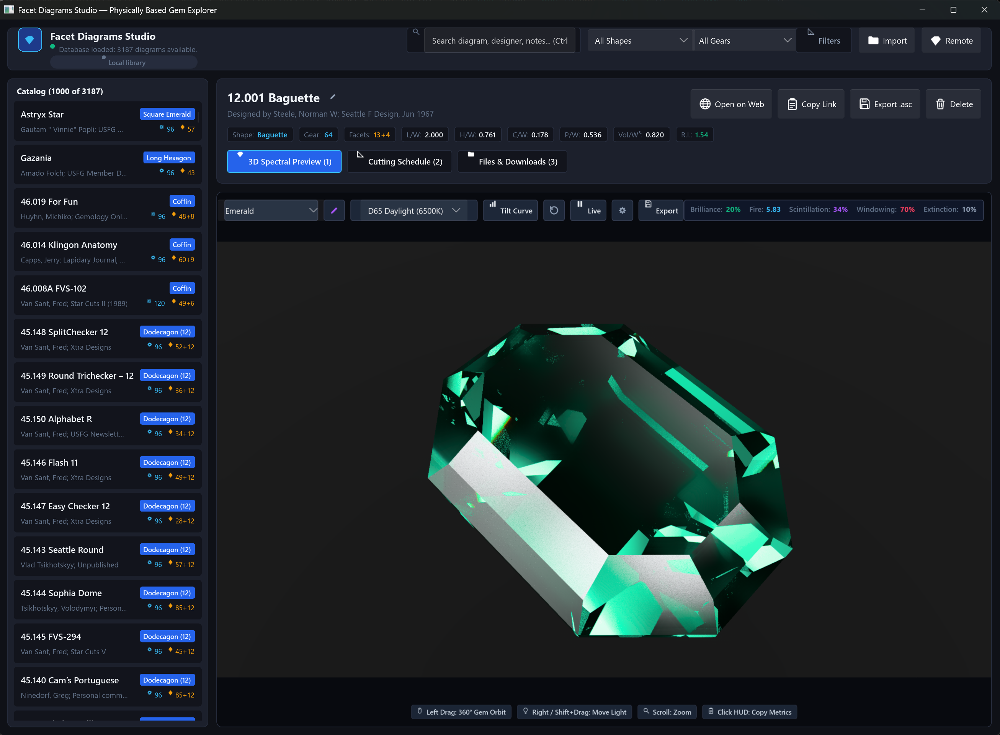
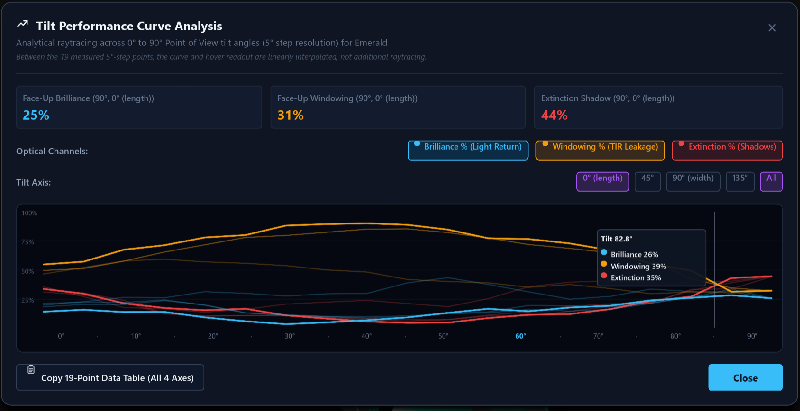
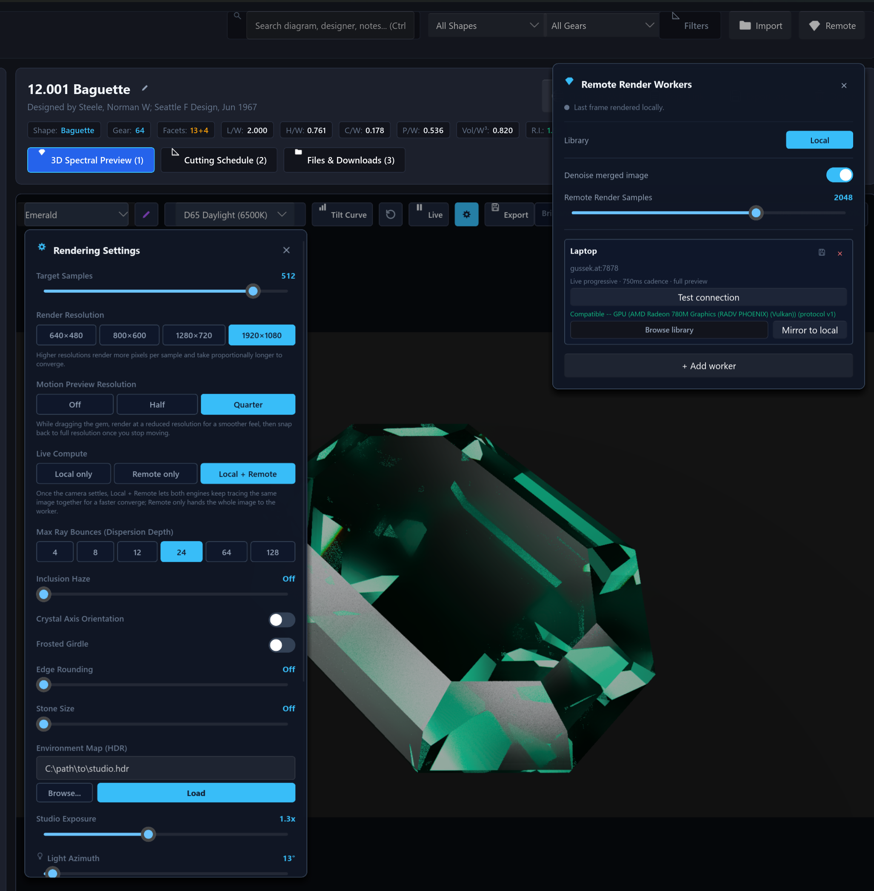
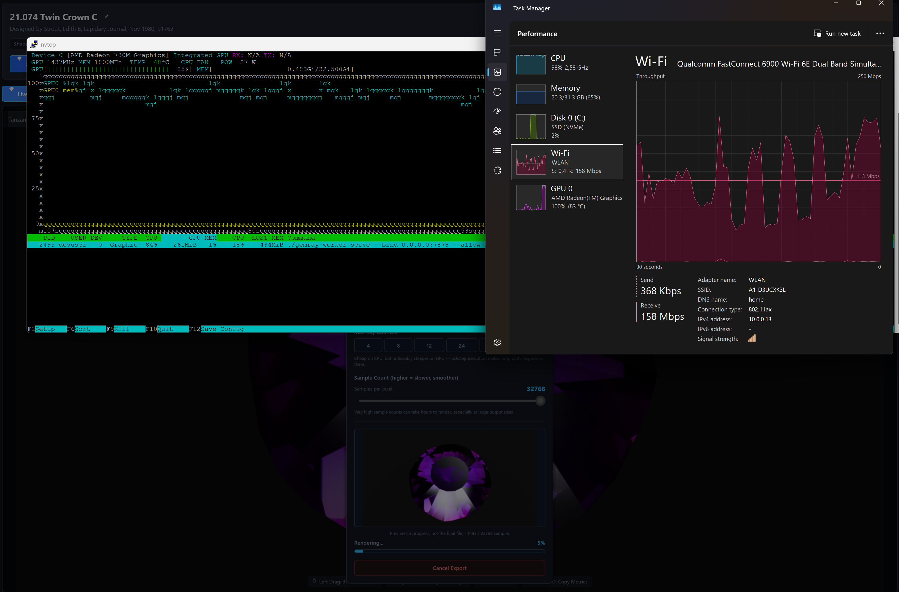

Physically-Based Spectral Gemstone Ray Tracing & Faceting Studio
See what cut gemstones actually look like from real cutting schedules. Full 8-channel hero-wavelength spectral dispersion (fire), Stokes–Mueller polarized light transport, and biaxial crystal optics — not the scalar RGB approximations of conventional 3D engines.

Why Conventional 3D Engines Fail on Cut Gemstones
Standard game and VFX renderers rely on empirical approximations designed for diffuse materials and tinted glass. When light bounces 20–50 times inside a faceted gemstone, those shortcuts collapse into lifeless, plastic-looking renders.
Tristimulus RGB & Empirical Hacks
-
Fixed 3-Channel RGB Sampling
Traces red, green, and blue rays independently or uses a single scalar IOR. Produces synthetic RGB color fringing rather than continuous spectral rainbows.
-
Scalar Fresnel & Ignored Polarization
Light undergoing 10–50 internal reflections becomes intensely polarized. Treating Fresnel reflectance as unpolarized scalar probabilities causes artificial light leakage and false critical angles.
-
Isotropic Glass Approximation
Real gems (Sapphire, Ruby, Tourmaline, Zircon, Alexandrite, Tanzanite) are anisotropic. Conventional shaders cannot split ordinary and extraordinary rays or model spatial Poynting walk-off.
-
Mesh BVH Traversal Overhead
Tessellating facet planes into millions of triangles slows down ray-tracing and causes subtle rounding gaps at facet junctions.
Rigorous Gemological Physics
-
8-Channel Stratified HWSS (380–780 nm)
Every ray carries 8 correlated wavelengths (one hero plus 7 rotated companions), evaluating continuous Sellmeier equations to render authentic spectral fire with zero color-banding.
-
Full 4D Stokes–Mueller Calculus
Tracks polarization states and total-internal-reflection (TIR) phase retardation δ = δ_p − δ_s, accurately modeling Brewster extinction and facet-reflection energy preservation.
-
Uniaxial & Biaxial Crystal Indicatrices
True anisotropic ray splitting with Poynting vector walk-off and 2nd-rank directional pleochroic absorption tensors evaluated via the Beer–Lambert law.
-
Exact Analytical O(M) Polyhedral Half-Spaces
Gemstone geometry is represented directly as planar half-spaces. Ray-slab intersections are solved analytically with zero BVH overhead and razor-sharp facet edges.
Built for Lapidaries, Researchers, and Optical Artists
From raw GemCAD .asc cutting schedules to 8K wide-gamut master renders and interactive tilt-performance analytics.
Continuous Spectral Dispersion
Multi-term Sellmeier and Cauchy dispersion equations model refractive index n(λ) continuously from ultraviolet (380 nm) to infrared (780 nm). Real spectral fire without artificial RGB fringing.
Polarized Light Transport
4D Stokes vectors [I, Q, U, V] and 4×4 Mueller matrices evaluate Fresnel reflection/transmission and TIR phase shifts at every facet interface. Preserves genuine extinction and polarization patterns.
Anisotropic Birefringence
Rays split into Ordinary (o) and Extraordinary (e) wavefronts inside non-cubic crystals. Biaxial indicatrices model Chrysoberyl (Alexandrite), Topaz, and Tanzanite on both CPU and GPU.
Verified GPU Megakernel
A complete WGSL compute shader port of the spectral transport engine. Verified against the multi-threaded CPU reference by a 4-tier harness achieving a genuine max ULP = 0 across all core functions.
Constraint-Based Faceting CAD
Reverse-engineers mast cutting depths from meet constraints and index gears. Includes rough preforms, autonomous angle optimization, and manufacturability linting for real-world laps.
Gemological Performance Metrics
Calculates ISO/GIA standard optical metrics: Brilliance (%), Fire Index, Scintillation (%), Windowing (%), and Extinction (%). Sweeps 181 tilt angles across 4 camera azimuths to evaluate stone performance in motion.
Explore Gemstone Dispersion & Crystal Spectra
Select a gemstone to evaluate its continuous Sellmeier dispersion equation n(λ) across the visible spectrum (380–780 nm) and inspect its crystallographic characteristics.
The Indicatrix Workspace Ecosystem
A cohesive suite of specialized, high-performance crates. Publishable standalone with near-zero base dependencies.
Desktop faceting editor built with Slint 1.17: browse designs, orbit in 3D, inspect cutting schedules, and export up to 8K master stills.
In-browser spectral path tracer running via WebGPU. Drag and drop any GemCAD .asc schedule to render in real-time with zero installation.
High-throughput CLI renderer and remote worker daemon. Offloads tilt-performance sweeps and sample tracing over mutual TLS (mTLS).
The pure spectral path tracer. 8-channel stratified HWSS, Stokes-Mueller polarization, Sellmeier dispersion, and verified WGSL GPU megakernel.
Preforms, constraint-based cutting schedule solver, undo/redo history stack, autonomous angle optimizer, and manufacturability linter.
Privacy-first local SQLite library. Fast parametric searching across RI, gear, facet count, and L/W ratio with zero telemetry.
Zero-runtime-dependency parser and writer for GemCAD .asc schedules and native .indicatrix.toml paired sidecars.
Framed binary wire protocol with sample-range additivity, enabling distributed cluster rendering without tile stitching seams.
Designed for Precision & Insight
Every screen provides actionable optical feedback, allowing you to perfect facet angles before touching rough gemstone material.
Real-Time Spectral Viewport & Library
Browse thousands of faceting designs with fast parametric filtering. Orbit with mouse controls while the progressive path tracer accumulates samples in real-time.

181-Point Tilt Performance Sweeps
Evaluates gemstone light return, windowing (light leakage through the pavilion), and extinction across 4 azimuth axes as the stone tilts in the wearer's hand.

Comprehensive Physical Controls
Adjust maximum bounces, target SPP, exposure, lighting angles, inclusion scattering (Henyey-Greenstein silk/rutile simulation), and load custom HDR equirectangular maps.

Preview-Then-Handoff Architecture
Local GPU/CPU provides zero-latency interactive viewport feedback. When the camera settles, computation seamlessly hands off to a high-powered remote GPU server over mutual TLS.
To add or update screenshots of specific application parts (such as the Solid Inspection View, Meet Solver, Material Retargeting, or Web Viewer):
1. Image Directory: Save your image files inside /mnt/c/temp/mcp/ghp/assets/images/ (or relative to website root: assets/images/).
2. Recommended Names & Dimensions: Use standard 16:10 or 16:9 PNGs (e.g. solid_inspection.png, editor_solve.png, retarget_dialog.png).
3. See Complete Instructions: Visit the Gallery & Media Guide page for a full list of suggested screenshots and exact HTML markup snippets!
Build and Run in Minutes
Written in modern Rust (2024 edition). Works on Linux and Windows. Zero proprietary drivers required.
# 1. Clone the repository
git clone https://github.com/suitable-name/indicatrix.git
cd indicatrix
# 2. Launch the Desktop Faceting Studio
cargo run -p indicatrix-cut
# 3. Or launch with GPU Megakernel Acceleration (Vulkan / Metal / DX12)
cargo run -p indicatrix-cut --features gpu
# Render a scene headlessly at 4K resolution with 256 SPP
cargo run -p indicatrix-worker --features worker -- render \
--scene scene.json \
--out render.png \
--width 3840 \
--height 2160 \
--samples 256